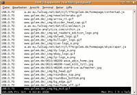

Squid
Ausbaufähige Anleitung
Dieser Anleitung fehlen noch einige Informationen. Wenn Du etwas verbessern kannst, dann editiere den Beitrag, um die Qualität des Wikis noch weiter zu verbessern.
Anmerkung: Bis auf die Authentifizierung funktioniert alles mit squid 3. Dies kann anders als unten beschrieben gelöst werden. (Wird später eingefügt)
Dieser Artikel wurde für die folgenden Ubuntu-Versionen getestet:
Dieser Artikel ist mit keiner aktuell unterstützten Ubuntu-Version getestet! Bitte diesen Artikel testen und das getestet-Tag entsprechend anpassen.
Zum Verständnis dieses Artikels sind folgende Seiten hilfreich:
 Squid
Squid  ist ein Open-Source Proxyserver. Das heißt Daten, die aus dem Internet angefordert werden, speichert Squid lokal in einem Cache und lädt diese bei Bedarf aus dem Zwischenspeicher nach. Dadurch ist der Datentransfer effizienter, weil weniger Netzbelastung durch große Datenmengen erzeugt wird. Aber man kann durch den Einsatz von Filtern auch die Sicherheit des Netzes erhöhen.
ist ein Open-Source Proxyserver. Das heißt Daten, die aus dem Internet angefordert werden, speichert Squid lokal in einem Cache und lädt diese bei Bedarf aus dem Zwischenspeicher nach. Dadurch ist der Datentransfer effizienter, weil weniger Netzbelastung durch große Datenmengen erzeugt wird. Aber man kann durch den Einsatz von Filtern auch die Sicherheit des Netzes erhöhen.
Aus der Wikipedia: "Squid zeichnet sich vor allem durch seine gute Skalierbarkeit aus. Squid unterstützt die Netzwerkprotokolle HTTP/HTTPS, FTP über HTTP und Gopher. Er kann sowohl für sehr kleine Netze (5-10 User), als auch für sehr große Proxyverbünde in Weitverkehrsnetzen mit mehreren hunderttausend Benutzern eingesetzt werden."
Dennoch sollte man sich vor einem Einsatz von Squid Gedanken machen, was wie zwischengespeichert werden soll. Dies betrifft zum einen die Cache-Strategie  und zum anderen die Behandlung von heute überall im Internet verfügbaren Streaming-Angeboten (Musik, Video, TV) (rechtliche Dinge, die das Mitschneiden von Streams betreffen).
und zum anderen die Behandlung von heute überall im Internet verfügbaren Streaming-Angeboten (Musik, Video, TV) (rechtliche Dinge, die das Mitschneiden von Streams betreffen).
Installation¶
In den Paketquellen von Ubuntu ist Squid sowohl in der Version 2.7 als auch 3.0/3.1 vertreten. Die alte Version hat seit August 2011 den Status DEPRECATED (veraltet) .
Squid 2.7 wird direkt aus den Paketquellen von Ubuntu über das folgende Paket installiert [1]:
squid
 mit apturl
mit apturl
Paketliste zum Kopieren:
sudo apt-get install squid
sudo aptitude install squid
Squid 3.0/3.1 wird ebenfalls direkt aus den Paketquellen von Ubuntu installiert [1]:
squid3
mit apturl
Paketliste zum Kopieren:
sudo apt-get install squid3
sudo aptitude install squid3
Nach der Installation ist Squid noch nicht lauffähig. Hat man Squid über ein Terminal [2] installiert, so werden beim Versuch, Squid zu starten, gleich Fehlermeldungen wie
* Restarting Squid HTTP proxy squid * Creating squid spool directory structure FATAL: Could not determine fully qualified hostname. Please set 'visible_hostname'
ausgegeben. Das ist normal, denn Squid muss erst konfiguriert werden.
Dienst steuern¶
Ab Ubuntu 10.10 wird Squid durch Upstart gestartet und kann wie folgt gesteuert werden:
# Allgemein sudo service squid BEFEHL
wobei BEFEHL start, stop oder --full-restart sein kann.
Konfiguration¶
Wie schon in der Einleitung geschrieben, ist Squid nicht nur ein Programm für kleine Netze Zuhause oder in der Firma. Squid kann so gut wie alle Einsatzzwecke abdecken. Dies hat leider zur Folge, dass die Konfiguration nicht sehr einfach ist. Allerdings sind die Grundfunktionen leicht zu konfigurieren, wenn man weiß, wo man ansetzen muss.
Sämtliche Konfigurationen werden in der Datei /etc/squid/squid.conf vorgenommen. Die Datei kann mit einem beliebigen Editor [3] bearbeitet werden. Allerdings benötigt man dazu wie bei allen Systemdateien Root-Rechte. Auch hier zeigt sich wieder die Bandbreite von Squid. Die Datei ist über 7959 Zeilen lang. Allerdings besteht der größte Teil aus Kommentaren.
Hinweis:
Die meisten der nachfolgenden Werte sind aus der Konfiguration von Squid 2.7 entnommen. Bei Squid 3.0/3.1 sind wesentlich höhere Werte voreingestellt. Das trägt der Tatsache Rechnung, dass die Hardware auch wesentlich leistungsfähiger geworden ist. Um Probleme zu vermeiden, sollte vor allem die Größe des Cache im Arbeitsspeicher geprüft und evtl. an die eigene Maschine angepasst werden.
Netzwerkport¶
Üblicherweise wartet Squid auf dem Port 3128 auf Anfragen. Bei Bedarf lässt sich der Port über die Option
# TAG: http_port http_port 3128
frei setzen. Wenn man Squid auf einem Router laufen hat, möchte man ihn vielleicht an die interne Schnittstelle binden, so dass er von außen nicht zu erreichen ist. Dafür setzt man der Port-Angabe einfach die IP-Adresse und einen Doppelpunkt voran:
http_port 192.168.0.1:3128
Größe des Caches im Arbeitsspeicher¶
Je nachdem, wie viel RAM der Rechner zur Verfügung hat, kann man den Wert für das System anpassen. Zu beachten ist, dass Squid bei hoher Auslastung auch über diesen Wert hinaus geht. Dient der Rechner als reiner HTTP-Proxy, so kann man bis zu 20% des vorhanden Speichers angeben.
# TAG: cache_mem (bytes) cache_mem 32 MB
Max. Größe gecachter Dateien¶
Ein relativ kleiner Wert führt zu höheren Objekt-Hitraten und damit in der Regel zu etwas besserer Geschwindigkeit. Ein höherer Wert führt zu einer höheren Byte-Hitrate und reduziert die nötige Bandbreite. Der Standardwert sind 20480 KB. Je nach Bedarf kann dieser Wert variiert werden.
# TAG: maximum_object_size (bytes) maximum_object_size 10000 KB
Max. Größe gecachter Dateien im RAM¶
Da RAM meistens die begehrteste Ressource ist, gibt man an, bis zu welcher Größe Dateien im RAM gehalten werden dürfen. Ein größerer Wert verbessert natürlich die Performance des Cache, wenn immer wieder die selben Daten angefordert werden. Gleichzeitig wird jedoch die Menge an Dateien, die im RAM vorgehalten werden können, reduziert.
# TAG: maximum_object_size_in_memory (bytes) maximum_object_size_in_memory 32 KB
Verfahren um Speicherplatz freizugeben¶
Wenn der Cache voll ist, muss entschieden werden, welche Daten gelöscht werden sollen und welche nicht. Dafür gibt es drei Strategien:
LRUbehält die zuletzt angefragten Objekte im Cache, unabhängig von Größe und Alter der Objekte (wird als Standard verwendet, wenn man nichts angibt).heap GDSFoptimiert die Objekt-Hitrate. Kleine, häufig angefragte Objekte werden auf Kosten großer, weniger häufig angefragter Objekte im Cache gehalten. Damit wird die Wahrscheinlichkeit eines Objekt-Hit gesteigert.heap LFUDAoptimiert die Byte-Hitrate. Häufig angefragte Objekte werden im Cache gehalten, selten angefragte werden freigegeben, unabhängig von deren Größe. Damit wird ein häufiger angefragtes, großes Objekt ggf. auf Kosten vieler kleiner Objekte im Cache gehalten. Damit steigt die Byte-Hitrate auf Kosten der Objekt-Hitrate.
Man kann Strategien auch mischen. Es bietet sich an, für Objekte im Ram heap GDSF zu verwenden und für Objekte im Festplatten-Cache heap LFUDA. So wird ein ausgewogener Kompromiss zwischen schnellen Reaktionszeiten und Traffic-Sparen erreicht:
# TAG: cache_replacement_policy cache_replacement_policy heap LFUDA # TAG: memory_replacement_policy memory_replacement_policy heap GDSF
Genereller Speicherort von Log-Dateien¶
Bei Bedarf kann man noch definieren, wo Squid die gecachten Daten ablegen soll. Standard ist das Verzeichnis /var/spool/squid. Falls man hier anderes Verzeichnis benutzen will, so muss man darauf achten, dass der Benutzer proxy, unter dem Squid läuft, auf dieses Verzeichnis Schreib- und Leserechte hat. Das Verzeichnis lässt sich über die Option
# TAG: cache_dir cache_dir ufs /var/spool/squid3 2000 16 256
bestimmen .
ufs- ist das Standard Speichersystem von Squid. Unter Linux sollteaufsverwendet werden, da es hier Schreibzugriffe beschleunigt./var/spool/squid- ist das gewählte Verzeichnis für den Squidcache2000- gibt die Cache-Größe in MB an. Default-Wert sind 100 MB. Dabei sollte man beachten, dass man diesen Eintrag nicht beliebig hoch setzen darf. Um so größer der Cache ist, um so mehr RAM braucht Squid. Also nicht einfach einen Cache von 40 GB machen, weil man ausreichend Festplattenplatz hat. Auch sollte man auf einer Partition mindestens 20% Platz frei lassen.16- gibt an, wie viele Unterordner für Level1-Domains erstellt werden sollen. Wenn man diesen Wert verändert, muss der Cache gelöscht werden.256- gibt an, wie viele Unterordner für Level2-Domains erstellt werden sollen. Auch bei diesem Wert muss der Cache gelöscht werden.
Hinweis:
Squid benutzt zusätzlich zur cache_mem-Variable noch ca. 10-20 MB an Arbeitsspeicher pro GB belegtem Festplattenplatz. D.h. bei einer Cachegröße von 20 GB werden ca. 200 - 400 MB zusätzlicher Arbeitsspeicher belegt. Hat man bei der Variable cache_mem bereits 512 MB angegeben, so erhöht sich der gesamte Arbeitsspeicherbedarf bereits auf 712 - 912 MB. Es kann daher sehr schnell passieren, dass Squid Daten auf die SWAP-Partition auslagern muss. Somit wird der Proxy dementsprechend langsam, da er die Daten nicht mehr aus dem schnellen Arbeitsspeicher liest, sondern von der sehr langsamen Festplatte!
Angabe eines expliziten Speicherorts für Log-Dateien¶
Man kann den Speicherort der Logs auch explizit angeben.
Für die access.log sieht dann wie folgt aus, unter Angabe des Standardverzeichnisses.
# TAG: cache_access_log cache_access_log /var/log/squid/access.log
Für die cache.log so:
# TAG: cache_log cache_log /var/log/squid3/cache.log
Cache löschen¶
Sollte aus irgendeinem Grund der Cache von Squid gelöscht werden, muss dafür Squid angehalten, der Löschbefehl abgesetzt und anschließend wieder gestartet werden. Bei der Verwendung von Squid 3.0/3.1 ist der Aufruf squid durch squid3 zu ersetzen:
sudo /etc/init.d/squid stop sudo squid -z sudo /etc/init.d/squid start
Die ersten Seitenaufrufe gehen dann langsam, da der Cache erst wieder aufgebaut wird. Wenn man das vermeiden möchte, ruft man lokal oft benutzte Seiten ab. Dazu kann wget benutzt werden:
wget --cache=off -r http://meineSeite.de
Anschließend können die lokal übertragenen Dateien wieder gelöscht werden.
Datenschutz¶
Wenn die Privatsphäre der Clients bewahrt werden soll oder muss (z.B. Datenschutz in Unternehmen), kann hier eine Netzwerk-Maske definiert werden, die dazu führt, dass die einzelnen Logfile-Einträge nicht mehr einem Rechner zugeordnet werden. Eine Netzwerk-Maske von 255.255.255.0 würde dazu führen, dass bei allen IP-Adressen in den Logfiles und der cachemgr-Ausgabe die letzte Stelle als "0" dargestellt wird. Beim Standardwert 255.255.255.255 wird die komplette Adresse angezeigt.
# TAG: client_netmask client_netmask 255.255.255.0
IP Adresse verbergen¶
In den Voreinstellungen von Squid wird die echte IP-Adresse des eigenen Rechners hinter dem Proxy-Server in den Header Daten mitgesendet. Dieses kann man unterdrücken, wenn man folgende Einstellung vornimmt:
# TAG: forwarded_for forwarded_for off
Selbstverständlich kann Squid seine eigene IP-Adresse nicht vor dem Ziel verbergen, so dass man nicht komplett anonym im Netz ist. Insbesondere wenn man den Squid in seinem eigenen Netz stehen hat, wird lediglich die lokale IP-Adresse hinter dem NAT-Router nicht mehr mitgesendet.
Squid VIA Header ausschalten¶
Normalerweise sendet Squid im Header HTTP_VIA seinen Versions-String mit, wie es in RFC2616 vorgeschrieben ist. Dies kann man mit folgenden Eintrag unterdrücken:
# TAG: via via off
Authentifizierung¶
Hinweis:
Die Authentifizierung funktioniert nur mit einem Proxy, der normal angesprochen wird. Richtet man Squid als transparenten Proxy ein, so ist eine Authentifizierung nicht möglich, da der Proxy ja nicht direkt vom Client aus angesprochen wird.
Eventuell möchte man, dass sich Benutzer am Squid-Proxy anmelden müssen, bevor sie über den Proxy auf das Internet zugreifen können. Dies ist sinnvoll, wenn z.B. unterschiedliche Nutzer verschiedene Rechte bekommen sollen. So ist es z.B. möglich, dass einzelne Benutzer über Blacklist definierte Webseiten nicht aufrufen können. Am einfachsten ist es, die vorhandenen Benutzer im System zur Authentifizierung am Squid-Proxy heranzuziehen. Dazu müssen die Zeilen
# TAG: auth_param auth_param basic program /usr/lib/squid/pam_auth auth_param basic children 5 auth_param basic realm Squid proxy-caching web server auth_param basic credentialsttl 2 hours auth_param basic casesensitive off
aktiviert und /usr/lib/squid/pam_auth als Programm eingetragen werden. Als Zugriffsregel (s.u.) wäre dann
# TAG: http_access acl checkpw proxy_auth REQUIRED http_access allow checkpw all
nötig. Danach können Benutzer sich mit ihren Daten einloggen, die sie nutzen um sich lokal am Rechner anzumelden.
Zugriffslisten und -regeln (ACLs)¶
Aus Sicherheitsgründen ist die Voreinstellung von Squid so, dass niemand Anfragen über den Proxy in das Internet schicken darf. Deshalb muss jeder Rechner bzw. jedes Netz explizit freigegeben werden (siehe Beispiele), indem man Zugriffsrechte erteilt.
Für die Rechtevergabe muss zunächst die Zugriffs-Kontroll-Liste (Access Control List, ACL) definiert werden. Anschließend wird über den Namen dieser ACL das Recht mit dem Schlüsselwort http_access zugewiesen. Die Syntax einer ACL sieht allgemein so aus.
acl <frei_definierbarer_Name> <acl_Typ> <Werte>
Hinweis:
Die Reihenfolge der Freigaben ist entscheidend! Wurde zuerst ein http_access deny all gesetzt, kann man darunter keinen Zugriff mehr einrichten. Daher sollten Freigaben möglichst am Anfang der squid.conf stehen.
In den Beispielen müssen die verwendeten IP-Adressen an die eigenen Verhältnisse angepasst werden.
Beispiele¶
Als Beispiel 1 wird hier die ACL-Regel freigegeben1 definiert, die allen Benutzern und Rechnern aus dem Netz 192.168.10.* Zugang zum Internet erlauben würde.
# Beispiel 1: acl freigegeben1 src 192.168.10.0/255.255.255.0 http_access allow freigegeben1
Möglich ist auch die Angabe einer Teilmenge von Rechnern aus einem Netz: Hier als Beispiel 2 die ACL freigegeben2, die allen Rechner mit den IPs 192.168.20.1 bis 192.168.20.99 den Zugriff gestatten würde.
# Beispiel 2: acl freigegeben2 src 192.168.20.1-192.168.20.99 http_access allow freigegeben2
Beispiel 3: Lediglich einzelne Rechner freigeben: Eine einfache Erlaubnis-Regel für die IP 192.168.30.1 (Name ist hier testpc).
# Beispiel 3: acl testpc src 192.168.30.1 http_access allow testpc
Hostname¶
Besitzt der Rechner, auf dem man Squid aufsetzt, keinen ordentlichen Namen inklusive Domäne (also z.b. rechner.foo.bar; FQDN), so kann man hier
# TAG: visible_hostname visible_hostname meinproxy
einen Namen einsetzen. Diese Option ist besonders wichtig, wenn wie oben genannt, Squid aufgrund eines not fully qualified hostname nicht starten möchte.
Traffic über weiteren Proxy leiten¶
Um den gesamten Traffic von Squid zu einem anderen Proxy, beispielsweise Privoxy oder Tor zu leiten, reicht folgender Eintrag:
# TAG: cache_peer cache_peer localhost parent 8118 7 no-query default
Hierbei ist localhost durch den Hostnamen des Proxyservers zu ersetzen, 8118 durch den entsprechenden Port. Zusätzlich muss noch dieser Eintrag gemacht werden:
# TAG: never_direct never_direct allow all
um wirklich den gesamten Traffic weiterzuleiten.
Somit könnte folgendes Szenario entstehen: Browser des Benutzers -> Squid (Cache) -> Privoxy (Werbefilter) -> Tor (Anonymisierer) -> WWW. Aber dies bleibt natürlich jedem selber überlassen.
Transparenter Proxy¶
Experten-Info:
Diese Konfiguration ist optional. Sie ist nur nötig, wenn der gesamte HTTP-Netzwerkverkehr über den Proxy geleitet werden soll, selbst wenn die Clients keinen Proxy eintragen. Aufgrund der nötigen Kenntnisse bezüglich iptables-Regeln ist dies nicht für Anfänger geeignet.
Ein transparenten Proxy ist ein Proxyserver, der vollkommen autark im Hintergrund arbeitet und der automatisch über eine iptables-Regel alle Internetpakete, die über Port 80 (also http) ins Internet geschickt werden, filtert. Das bedeutet, dass Benutzer im lokalen Netzwerk auf ihren Rechnern die Benutzung des Proxyserver nicht erst aktivieren müssen. Jeder Browser, jedes Programm benutzt dadurch zwangsläufig den Proxyserver. Dazu müssen noch folgende Einstellungen in der squid.conf vorgenommen werden.
Konfiguration¶
Um Squid als transparenten Proxy zu konfigurieren, muss nur ein zusätzlicher Parameter an die Option http_port angehängt werden. Hier muss der Wert transparent hinzugefügt werden.
# Squid normally listens to port 3128 http_port 3128 transparent
Delay Pools¶
Experten-Info:
Delay Pools sind ein sehr komplexes Thema. Die Aufteilung in Klassen und die Arbeit mit regulären Ausdrücken überfordert sicherlich Einsteiger.
Anfragen können in verschiedene Klassen unterteilt, über Filter sortiert und schließlich priorisiert werden. So ist es möglich, gewissen IPs mehr Bandbreite zur Verfügung zu stellen als anderen oder die Datenrate von Downloads z.B. komplett zu limitieren.
Als sehr einfaches Beispiel sei ein Delay Pool vorgegeben, der den kompletten Durchsatz auf 75 kb/s ab einer Dateigröße von 32 kb limitiert.
# DELAY POOL PARAMETERS delay_pools 1 delay_class 1 1 delay_parameters 1 32000/75000 delay_access 1 allow All
Weitere Funktionen bedürfen individuellen Anpassungen und meist ein ausführliches Studium der Squid Dokumentationen.
Debug Modus¶
Sollte der Squid Proxy nicht korrekt starten, kann Squid im Debug Modus gestartet werden. Fehlermeldungen werden so auf dem Terminal ausgegeben.
squid -NCd1
Alternativ erteilt Squid mit der Konfigurationseinstellung
debug_options ALL,1 33,2 28,9
eine detaillierte Fehlerauskunft. Im Protokoll steht, welche Regel bei welchem Request angewandt wurde und warum es zum Scheitern/Erfolg gekommen ist.
Überwachen¶
Achtung!
In Betrieben existieren normalerweise Datenschutzbestimmungen. So dürfen z.B. oftmals keine personenbezogenen Informationen aus Proxy-Logdateien gewonnen werden. Diese Datenschutzbestimmungen gelten auch für einen kleineren Rahmen. Setzt man zuhause für die Familie, für die Mitbewohner oder die Mitarbeiter einen Proxy auf, so hat man diese über die Logs zu informieren, es sei denn, man deaktiviert die Logfunktionen.
Squid kann umfangreiche Logdaten - zu finden unter /var/log/squid/ - über den Netzwerkverkehr schreiben, der über ihn weitergeleitet wird. So gibt in der access.log für jeden HTTP-Transfer einen Eintrag. Diese Datei kann bei entsprechender Konfiguration personenbezogene Daten enthalten (z.B. IP Adresse, Benutzername, Cookie-Informationen). Diese Informationen können mit verschiedenen Werkzeugen ausgewertet werden.

squidview¶
squidview ist ein Echtzeitmonitor für das Squid-access.log. Das Programm läuft mit einer ncurses-basierenden Textoberfläche. Es ist in den offiziellen Paketquellen enthalten und kann über das Paket
squidview (universe)
mit apturl
Paketliste zum Kopieren:
sudo apt-get install squidview
sudo aptitude install squidview
installiert werden. Über Filter und Suchoptionen kann effektiv nach Informationen im Squidlog gesucht werden. Ebenso ist es möglich, Berichte zu exportieren. Das Programm wird nach der Installation in einem Terminal [2] mit dem Befehl:
sudo squidview
aufgerufen.
Wenn man squid3 verwendet, sollte man einen Link von /var/log/squid3 auf /var/log/squid setzen, da squidview hardcoded daherkommt und nur in /var/log/squid nach den log-Dateien sucht.
sudo ln -s /var/log/squid3/ /var/log/squid
Des Weiteren sollte man sich der Gruppe proxy anschliessen; mit nachfolgendem Befehl.
sudo adduser <USER> proxy
<USER> ist durch den eigenen Login Namen zu ersetzen. Die Gruppe group kann man unter /etc/group auslesen.
SARG¶
SARG (Squid Analysis Report Generator) ist ein weiteres Analysierprogramm für die Logfiles. Man kann ausführliche Reports in Form von HTML-Dokumenten erstellen, die genaue Angaben enthalten, wer wann wohin wieviele Daten über den Proxy überträgt machen. Das Programm kann über die Paketverwaltung
sarg (universe)
mit apturl
Paketliste zum Kopieren:
sudo apt-get install sarg
sudo aptitude install sarg
installiert [1] werden und wird dann über ein Terminal mit dem Befehl
sudo sarg -g e -o </PFAD/ZUR/AUSGABE>
ausgeführt werden. Gibt man keinen Pfad an, so wird die Ausgabe direkt nach /var/www/squid-reports/ geleitet, wo man sie auch direkt über einen lokal installierten Webserver betrachten kann, wenn auf dem Rechner auch ein Webserver installiert ist. SARG wird über die Datei /etc/squid/sarg.conf konfiguriert. Hier lassen sich zahlreiche Details wie die Sprache der Reports und das Aussehen umfassend ändern.
Ubuntu 12.04¶
Hier hat sich der Speicherort geändert: die Ausgabe erfolgt normalerweise nach /var/lib/sarg/. Damit man sie auch direkt über einen lokal installierten Webserver betrachten kann, ändert man den Pfad nach /var/www/sarg/:
sudo sarg -g e -o /var/www/sarg
Die Daten sind dann unter http://SERVER.IP/sarg/index.html über einen Browser abrufbar.

SRG¶
SRG ist sehr ähnlich zu SARG. Auch dieses Programm analysiert das access.log von Squid und gibt den Bericht als HTML-Dateien aus. Allerdings läuft das Programm über einen Eintrag in cron.daily täglich automatisch ab und erzeugt den passenden Bericht des letzten Tages. Das Programm kann über die Paketverwaltung mit dem Paket
srg (universe)
mit apturl
Paketliste zum Kopieren:
sudo apt-get install srg
sudo aptitude install srg
installiert werden. Möchte man noch Konfigurationen vornehmen, so kann man dies in der Datei /etc/srg/srg.conf machen. Die Berichte werden automatisch nach /var/www/srg_reports geschrieben. Ist ein Webserver installiert, so können über diesen die Berichte über einen Browser betrachtet werden.
Links¶
Das Squid-Handbuch
- Online-Ausgabe des "Administrationshandbuch
zum Proxyserver" von Dirk Dithardt Der Web-Proxy Squid
auf Selflinux.deSquid-Proxy konfigurieren
- Blogbeitrag 06/2010
- Erstellt mit Inyoka
-
 2004 – 2017 ubuntuusers.de • Einige Rechte vorbehalten
2004 – 2017 ubuntuusers.de • Einige Rechte vorbehalten
Lizenz • Kontakt • Datenschutz • Impressum • Serverstatus -
Serverhousing gespendet von